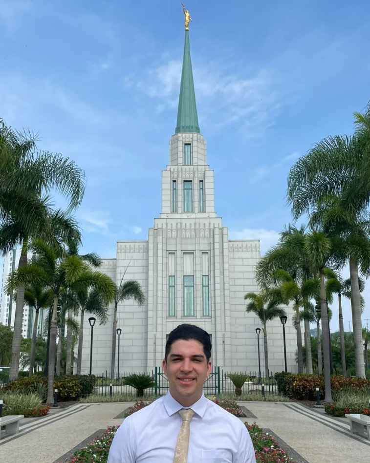

Shared Lopez | WDD 130
Hello! My name is Shared Lopez and I am from Santiago, Chile. Now I am living in the south of Brazil. I enjoy videogames and play sports. I would like to get my degree in programming and be a better programmer this year.
Hello! My name is Shared Lopez and I am from Santiago, Chile. Now I am living in the south of Brazil. I enjoy videogames and play sports. I would like to get my degree in programming and be a better programmer this year.